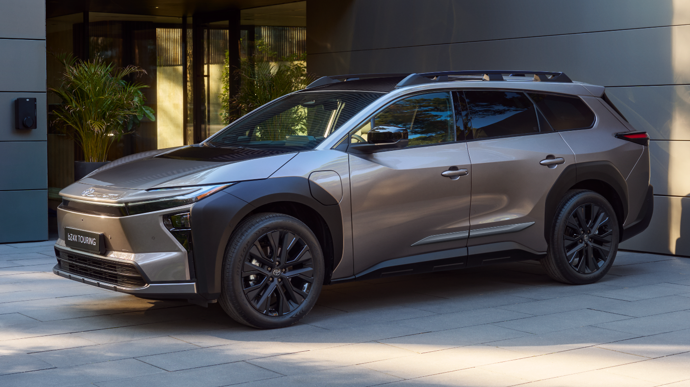

Through this internship I had the chance to join the Powertrain department in Toyota Motor Europe at the Toyota Technical Centre R&D facility based in Zaventem, Belgium. A research-focused role on the control side rather than the mechanical side. I worked on smoothing torque transition in electric vehicles — developing and testing an AI controller in MATLAB and Simcenter AMESim, and using real track test data to refine both the model and the control strategy iteratively.
Key skills gained were control theory, data analysis, AI and simulation experience especially in vehicle dynamics and frequency response. Due to confidentiality reasons, I am limited in details I can give.
Problem The torque smoothening was carried out by many hard coded maps calibrated by lots of tests in extensive processes.
Approach To replace the hard coded maps with Reinforcement Learning agent that can learn the torque transition by repeated simulation training simplifying the control logic.
Validation Used AMESim (Vehicle model) – MATLAB (RL Agent) models to co-simulate the two and validate the response of the vehicle in terms of driveability and vehicle dynamics.
Outcome I proved the concept that the RL Agent was able to learn and smooth the torque transition. It was also compatible to the control logic for the specific vehicle model. Moreover, a reward function was also developed that was adjustable between different drive modes. However, due to lack of testing time, it was not implemented in physical testing. The results were based purely on the vehicle model, which has its own accuracy limitations.
